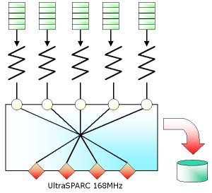

This demonstration shows the performance of the current Xmas prototype system in three different hardware environments: SUN Enterprise 3000 with 4 CPUs, SUN Sparcserver 1000 with 2 CPUs, and SUN Ultra2 with 2 CPUs.Three machines in our laboratory generate performance data, and the Java application receives the data over the Internet. The left graph shows the lookup performance. Current prototype implementation provides more than 200,000 lookups per second on Ultra2. However the data on the graph may show lower value because of system load. The right graph shows the update performance. Sparcserver 1000 uses battery-backuped memory device, named NVSIMM, for high-performance logging. The presence of NVSIMM provides more than 10,000 updates per second. In these two machines, group commit is turned on to acquire high throughput.

Xmas Home Page
Knowledge and Data Engineering
Laboratory
School of Electrical Engineering
Seoul National University